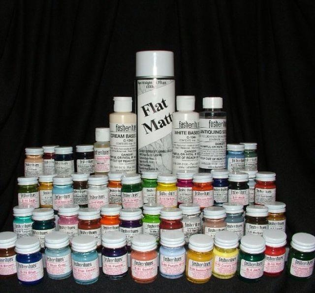
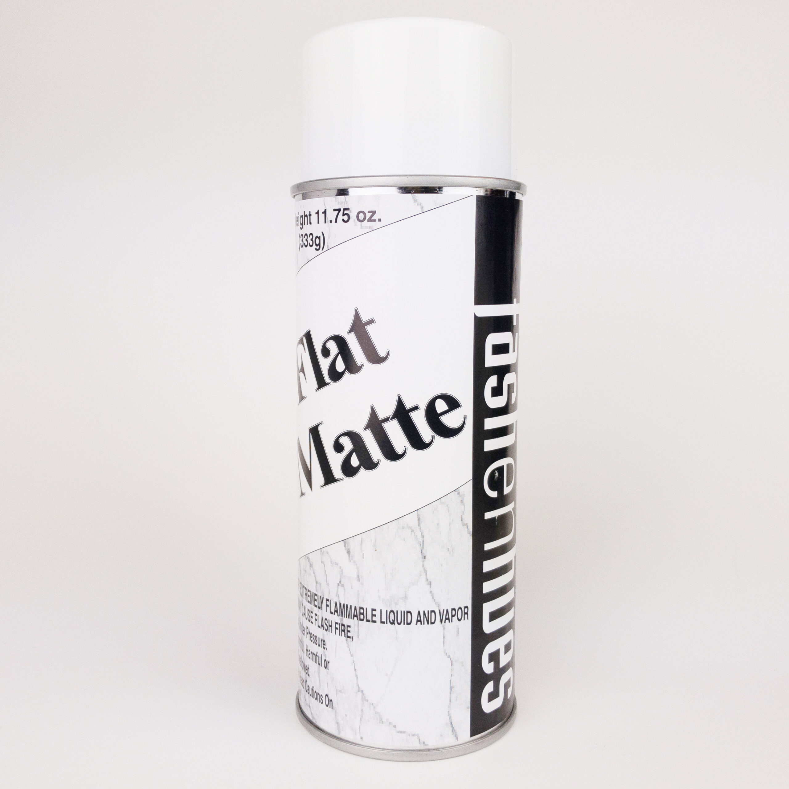

Lots of colors to choose from
Choose form any of our 48 Fashenhues Translucent Stains
Colors are oil based for easy application and use, but are water soluble for an easy clean-up. Be sure to use the base coats before putting on the translucent stains
1
STARTER KIT
Starter Kit contains:
(1) 4 oz White base coat
(1) 4 oz Cream Basecoat
(1) Antiquing Solution
(1) Blending Media
(15) ½ oz. Translucent colors, S-10 through S-24
(1) Large Flat Matte Spray>
2
MASTER KIT
Master Kit contains:
(1) 8 oz White base coat
(1) 8 oz Cream base coat
(1) Antiquing Solution
(1) Blending Media
(48) ½ oz Translucent
(22) 1 oz Metallic
(10) 1 oz Luminescent
(2) 1 oz Pearlescenent
(1) Large Flat Matte Spray
3
DELUXE KIT
Deluxe Kit contains:
(1) 4 oz White base coat
(1) 4 oz Cream Basecoat
(1) Antiquing Solution
(1) Blending Media
(48) ½ oz Translucents
(1) Large Flat Matte Spray
Good Brushes help with painting
Get yourself a good set of burshes to paint with different sizes choose from.

Fashenhues Colors are fun to use!
The absolute top-of-the-line in translucent colors – 48 superior oil-based translucent colors.

Gloss and Matt Spray gives your piece a finished look
When you are finished painting your ceramic pieces spray to seal your project .